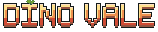

Sobreviva
Vida, torpor e fome cobram caro. Explore a ilha, colete o que achar e escolha suas brigas. Hoje a fome só cai; comer ainda está na lista.
Já existe

Em desenvolvimento: ainda não dá para jogar
Uma ilha. Dinossauros. Só você para sobreviver.
Explore, colete e derrube o torpor de criaturas enormes. Alimente cada uma enquanto dorme: a que hoje te caça pode amanhã lutar ao seu lado.
Vida, torpor e fome cobram caro. Explore a ilha, colete o que achar e escolha suas brigas. Hoje a fome só cai; comer ainda está na lista.
Já existe
Encha a barra de torpor, não a de vida, e alimente a criatura enquanto ela dorme. Se acordar antes da hora, o progresso se perde.
Já existe
Fundação, parede e um baú para guardar o que você arrancou da ilha. A base é o seu território.
Vem aí
O torpor também vale para você: se a barra encher, você desmaia, e qualquer predador por perto agradece. Essa parte ainda está em construção.
Grátis Código aberto
Feito em comunidade, com licença MIT. A ideia é que cada turma rode o próprio vale, sem mensalidade. Jogar junto pela internet ainda é só plano. Mais pra frente
Não há nada para baixar e não há data de lançamento: sai quando estiver bom. Hoje já anda por aqui:
Dino Vale é um projeto independente e de código aberto. Cada doação acelera a arte, a música e os próximos dinos.
Doar não dá nenhuma vantagem no jogo. Qualquer valor ajuda.
Abra o app do seu banco > Pix > Copia e cola, ou aponte a câmera para o QR.
O código do jogo fica aberto no GitHub. Ele pode estar vazio até o primeiro envio: nesse caso, é um quarto sem móveis.